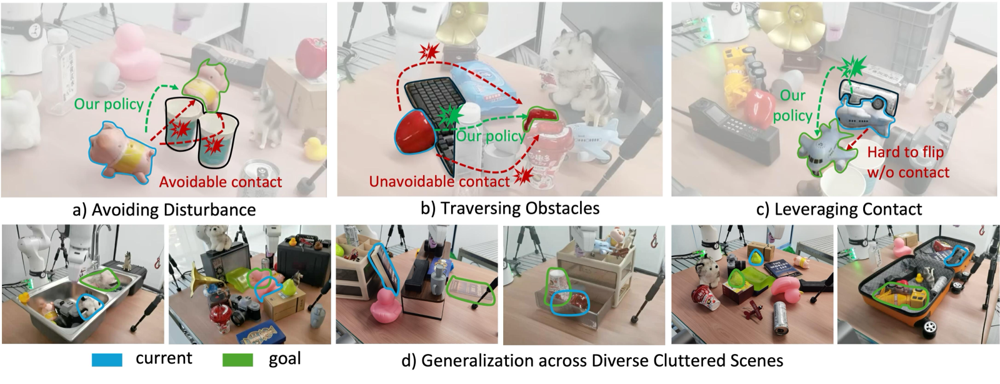
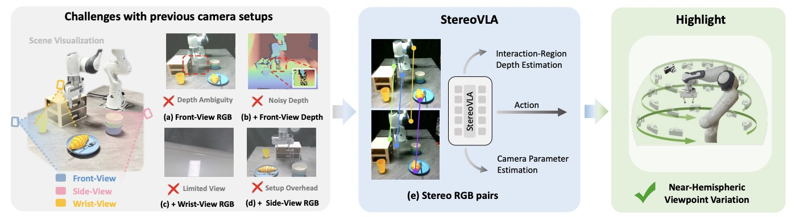

Research Interests
- Embodied AI and Robot Learning
- World Action Models (WAM)
- Vision-Language-Action Models (VLA)
- Robot Foundation Models
- Representation Learning and 3D Vision
- Dexterous and Contact-rich Manipulation
Education
-
2025 - PresentInstitute of Automation, Chinese Academy of Sciences / Beijing Academy of Artificial Intelligence
-
2021 - 2025Sun Yat-sen University
Publications
